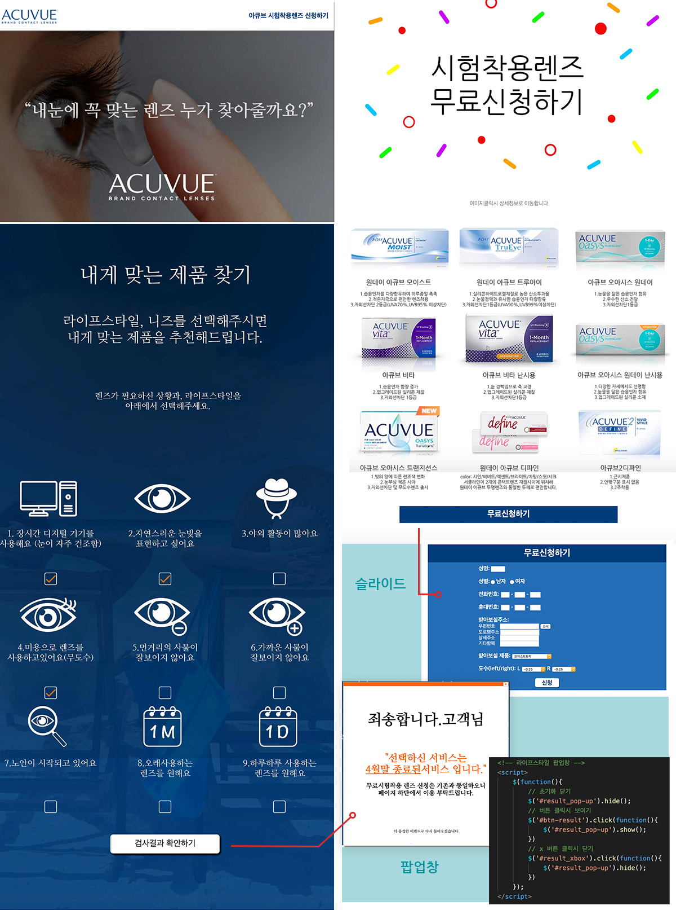

Acuvue Event page

아큐브 무료시착렌즈 이벤트 신청페이지
•기획의도:
1) 아큐브 무료시착렌즈 신청페이지
2) 라이프스타일을 선택하여 사용자에게 맞는 렌즈추천해주는 이벤트 / 해당이벤트는 4월말 종료되었다는 팝업창 생성됨.
3) 고객정보를 기록하여 시착렌즈를 신청하여 받아볼수있게 설정
4) 렌즈이미지를 클릭하여 정보를 확인할수 있도록 설정
•디자인 및 기능 목적:
1) 해더: 화면에 고정된 해더로 로고클릭시 아큐브 홈페이지 이동, 신청하기 클릭시 하단의 신청란으로 이동
2) 비주얼: "내눈에 꼭 맞는 렌즈 누가 찾아줄까요?" 라는 문구로 아래의 라이프스타일 선택지로 연결
3) 라이프스타일: 사용자의 라이프스타일과,니즈를 다중선택하여 본인에게 맞는 렌즈 추천 (본 이벤트는 종료되었다는 팝업창 제작)
4) 시착렌즈신청: 이미지클릭시 렌즈정보를 확인할수 있는 아큐브 페이지로 이동
5) 무료신청: 클릭시 슬라이드로 고객정보입력란 생성, 우편번호검색 api 연결됨